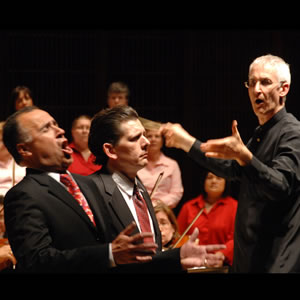

Updates · Press
Latest news, premieres, press coverage, and announcements from Phillip Kloeckner and the CIOA.

Recorded at the Madonna della Strada Chapel at Loyola University and premiered at the 2018 AGO Convention in Kansas City — a landmark moment for organ literature published by Carus-Verlag, Stuttgart.
Read Full StoryAll News
Kloeckner unveiled two never-before-heard organ sonatas composed by Puccini during his early years as a church organist in Lucca. The works were subsequently published by Carus-Verlag in Stuttgart.
Read More"Kloeckner tuvo una ejecución llena de color y que demostró su virtuosismo." — La Palabra. A performance full of color that demonstrated his virtuosity, earning widespread critical praise across the region.
Read MoreKloeckner established the Chicago International Organ Academy with a mission to bring organ culture, education, and performance to a global audience — anchored in Chicago's rich musical heritage.
Read MoreKloeckner's first commercial recording captures a wide-ranging program that showcases the full expressive spectrum of the pipe organ — from intimate liturgical reflections to virtuosic concert works.
View RecordingKloeckner continues his international performance schedule, bringing the organ's voice to audiences across Europe and the Americas — from grand cathedral venues to intimate chamber concerts.
Book a Performance